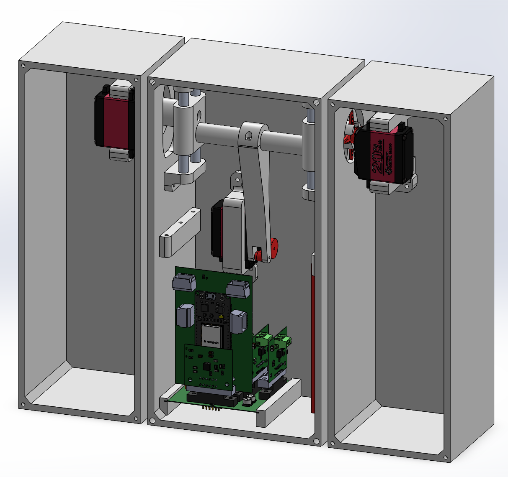
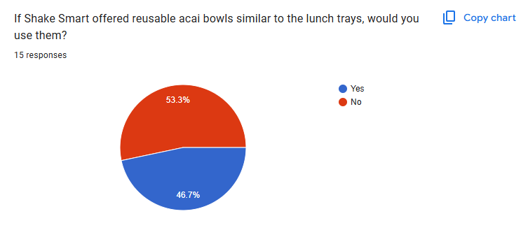
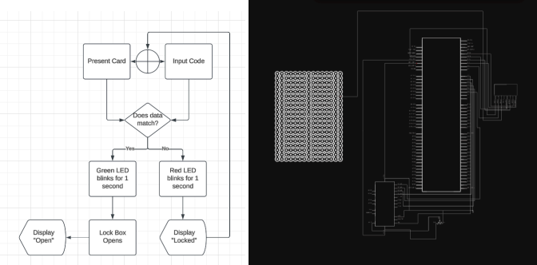
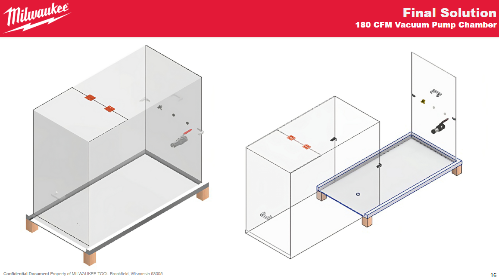
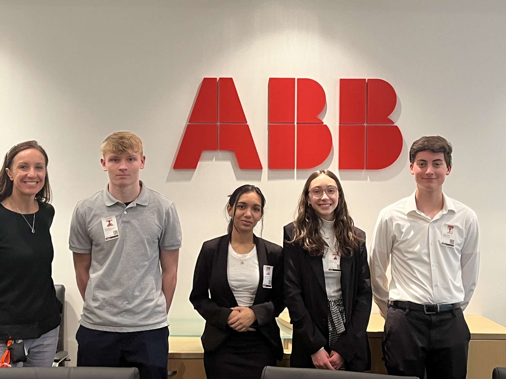

← Home
Low-Cost GNSS Tide Gauge Research | California Polytechnic State University (Sep 2026 – Present)
-
Developing a MATLAB script to calculate calibration constants for an
uncalibrated sensor using synchronized data points from a calibrated
reference gauge.
-
Installed and deployed radar-based water level gauges in Morro Bay to
support coastal water-level monitoring.
-
Contributing to the development of low-cost tide gauges designed to
expand sea-level monitoring among currently unmonitored locations.
3D-Printed Fixed-Wing Aircraft | Sigma Phi Delta (Aug 2026 – Present)
-
Leading a fraternity-wide engineering team in the design, manufacture,
and testing of a fully 3D-printed fixed-wing aircraft for the CSU
3D-Printed Fixed-Wing Aircraft Competition.
-
Coordinating project objectives, engineering responsibilities, design
reviews, and subsystem integration from concept development through
flight testing.
-
Translating competition requirements into design constraints to
optimize aircraft weight, structural integrity, manufacturability,
and flight performance.
Tactical Autonomous Robotic Sentinel | Sigma Phi Delta (Jan 2026 – Present)
-
Leading development of a proof-of-concept autonomous robot using
servo-actuated joints.
-
Implementing voice-command recognition on an ESP32 to decode simple
commands and map them to predetermined servo positions.
-
Designing a scalable mechatronics platform for future expansion into
vision-based automation and artificial intelligence.

Air Motor | California Polytechnic State University (Nov 2025 – Dec 2025)
-
Collaborated on a five-person team to machine a functional
compressed-air motor.
-
Manufactured precision components using five-axis CNC mills and manual
lathes to meet dimensional tolerances within ±0.005 in.
-
Assembled and tested the motor under controlled conditions, achieving
speeds of approximately 2900 RPM.

Secure Access Lockbox | California Polytechnic State University (Nov 2024 – Dec 2024)
-
Collaborated on a three-person team to design an access-control system
integrating an Arduino Mega, RFID authentication module, and keypad.
-
Utilized validation logic to authenticate credentials using RFID UID
comparison and PIN validation.
-
Programmed LED validation behavior with an LCD status display and LED
indicators.

Vacuum Chamber | Milwaukee Tool (Jan 2023 – Apr 2023)
-
Collaborated on a three-person team to design and prototype a
90 ft3 vacuum chamber to enable in-house high-altitude testing.
-
Calculated pump sizing and chamber pressure requirements to reach
12 PSIA with an evacuation time of under 60 seconds.
-
Developed proof-of-concept and detailed CAD models of the chamber
structures, supported by strength and deflection analysis.
-
Achieved a vacuum capable of simulating altitudes up to 29,500 ft.

Waste Reduction | Asea Brown Boveri (Sep 2022 – Dec 2022)
-
Collaborated on a three-person team to research waste-reduction
strategies for packaging and labeling materials.
-
Proposed solutions projected to save $20,000 annually while reducing
carbon footprint and enabling a circular reuse of styrofoam packaging
waste.
-
Presented waste-reduction roadmap to ABB’s environmental team using
Microsoft Office Suite.
